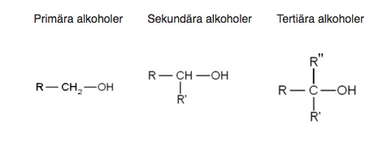

är organiska ämnen där en eller flera hydroxigrupper (-OH) är bundna till kolatomer i en kolkedja. Den enklaste alkoholen är metanol, CH3OH, med enbart en kolatom och en OH-grupp. Det ämne som oftast kallas alkohol i vardagsspråk är etanol, CH3CH2OH. Mer specifikt har alkoholer OH-gruppen eller OH-grupperna bunden till en alifatiskt bunden kolatom, d.v.s. en kolatom som ingår i en alifatisk kolkedja. Om kolkedjan är en alkan bestående av n kolatomer, har alkoholen summaformeln CnH2n+2-m(OH)m. Även alkener, alkyner, cykloalkaner och andra organiska föreningar kan bilda alkoholer, såsom etenol, cyklohexanol och 2-kloretanol. Föreningar med en hydroxigrupp bunden till aromatiskt bundna kolatomer, såsom en bensenring kallas däremot inte alkoholer utan fenoler, bensendioler och så vidare.
Alkoholer med flera kolatomer kan ha en av tre olika strukturer. Dessa tre typer är primära, sekundära och tertiära, vilket åsyftar antalet kolatomer som binder till den kolatom som binder till hydroxigruppen. I primära alkoholer binder den OH-bindande kolatomen till endast en annan kolatom. Alkoholer med en eller två kolatomer är alltid primära alkoholer, och metanol är ett specialfall, då kolatomen inte binder till någon annan kolatom. I sekundära alkoholer binder kolatomen till två andra kolatomer. Den minsta sekundära alkoholen är 2-propanol (trivialnamn isopropanol) med tre kolatomer. I tertiära alkoholer binder kolatomen till tre andra kolatomer. Den minsta tertiära alkoholen är 2-metyl-2-propanol (trivialnamn tert-butanol). R i strukturerna nedan betecknar en kolvätegrupp. Alkoholens fysikaliska egenskaper såsom smältpunkt egenskaper påverkas av strukturen. Trivialnamnet på sekundära alkoholer börjar ibland på iso- (för isomer), t.ex. isopropanol.
